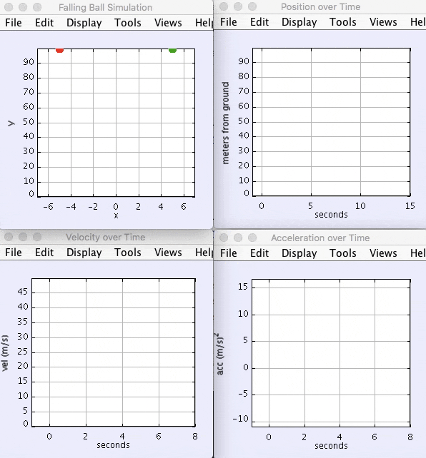

Projectile Assignment¶
Introduction to Simulations¶

This assignment will focus on projectile motion. You have already learned how to track the movement of a massless particle using kinematics equations. However, there are some limits to what you are able to calculate by hand. Therefore, it can be useful to instead use a computer model to simulate the movement of a particle.
There are certain assumptions that are made in the kinematics equations you use in your physics classes. You treat the projectiles that you use in problems as massless points. These assumptions allow you to solve problems more easily and provide close approximations to the “correct” answer. You will also need to make some assumptions in the simulations you build.
You should construct your simulation in layers of complexity, which means that the first draft of your simulation should be as simple as possible. Then, you can start to add on features and tweak your code to get closer and closer to a more accurate model. Alternatively, trying to make your simulation too complicated too quickly will likely give you issues when you try to debug.
Introduction to Modeling¶
Modeling is a concept that has broad definitions and meanings, even in science. We may never know the ‘true’ nature of the Universe and the laws governing its evolution – however, as scientists, we have made giant strides in discovering ever more precise approximations of its nature. These models enable us to understand how its different elements and systems interact. We can sometimes make predictions of future events or understand why that is impossible. Newton’s Laws of Motion, General Relativity, Quantum Mechanics, and String Theory are but a few of the fundamental models of different realms of the universe around us.
Another way that science uses the idea of a model is when working within one of the models above. We simplify situations, hoping to include only the dominant physics that will model most of what we observe. For example, when understanding the orbit of the earth around the sun, we might start with these simplifications:
- The earth is the only planet
- The earth doesn’t have a moon
- The sun is fixed in space
Using this model allows us to understand much, but not all, of the dynamics of a solar system.
Since many models in Physics are described mathematically, the simplified models scientists work with involve solving mathematical systems of varying complexity. Sometimes these systems can be solved ‘by hand’ with the tools you are currently acquiring. More often the systems are too complex and their solutions must be found in another way. One way to do this is with a computer simulation – another tool you are learning to employ.
Modeling Projectile Motion¶
You are standing on the Brooklyn Bridge holding a rock. If you throw the rock and watch it fly through the air, what quantities can you determine?
- If you know the rock’s initial velocity, and can determine where it lands, what can you learn about the height of the bridge?
- If you already knew the height, could you predict where it would hit the water?
You will begin to model the answers to these questions by creating a computer simulation of the rock’s motion.
Pseudocode
When creating an algorithm, it can be helpful to start by writing pseudocode: text which describes a program without having to follow exact Java syntax. For example, the pseudocode for a program which finds the largest number in an array could be:
set LARGEST to the first element in the array
for each element in the array:
if CURRENT_ELEMENT is greater than LARGEST:
then set LARGEST to CURRENT_ELEMENT
otherwise do nothing
output LARGEST
As you write pseudocode, imagine that a human will be reading and running your program, rather then the computer.
Review: Displaying Simulations using OSP¶
You will use the Open Source Physics (OSP) library to display your physics
simulations. You’ve already used OSP (specifically the PlotFrame class) to
plot graphs and Riemann sums, and you used AbstractSimulation to make an animation n Getting Started. This section will review how to create OSP animated
simulations.
Note
It might be useful to look at the JavaDocs for OSP in order to see for yourself what its methods look like. In the future, if you ever want to learn more aout a class, checking the documentation is a good place to start.
The Simulation Class¶
The first step when making an OSP simulation is to create a class which
extends AbstractSimulation (doc),
the abstract class from which all simulations inherit:
public class Projectile1DApp extends AbstractSimulation {
// ...
}
You’ll notice an error pop up; that’s because AbstractSimulation has an
abstract method called doStep() which must be implemented inside of your
simulation class (the @Override annotation is a reminder that doStep()
is implementing a method from its superclass).
doStep()¶
doStep() is a function that is repeatedly called while the simulation is
running. You can think of it as a looping main() function, or as a
built-in while loop that always has a true condition. Since the code
in doStep() will be repeated thousands of times throughout the course of
the simulation, it is very important to think about how you will optimize your
code so that it is as computationally efficient as possible.
@Override
protected void doStep() {
// ...
}
Note
You can make your simulation a little faster by avoiding updating your
graphics every doStep(). Instead of just telling the simulation app to
run the doStep less often, which will just slow the simulation down, or
increasing your time interval, which will make your calculations less
accurate, you can put a for loop inside of your doStep(). If you run
calculations inside of the for loop and update your grpahics outside of
the loop, you can determine for yourself how many times you want to allow
the calculations to update before the graphics update.
doStep() will be called repeatedly by OSP as your program runs; you will
update the particle’s properties and display its new position inside of this
method.
Next, add the reset() and initialize() methods to Projectile1DApp
reset()¶
reset() runs at the start every time you run your simulation app. (It really should be called “setup” because it is run first, even before initialize(). This is a good place to add
all of the information to the Control Panel that you want the user to be
able to update with their own input. You can do this by writing
control.addValue("variableName", variableValue). Additionally, if you stop
a simulation that is already initialized and running, you can press the
Reset button to restart it and reinitialize it. In order to use this
feature, during reset() it is best to clear off all of your graphics.
@Override
public void reset() {
// ...
}
initialize()¶
initialize() runs directly after reset() and right before the first
doStep(). As the name of the function suggests, it is a good time to get
everything set up for your simulation. During this step, you should take all
of the input from the Control Panel and store it in variables in your
code. You can do this by running control.getDouble(),
control.getString(), etc., using the appropriate function for your desired
data type.
@Override
public void initialize() {
// ...
}
As with doStep(), you will never call these methods yourself. Rather, they
will be called by the superclass, AbstractSimulation. Just as getSubintervalArea()
and drawSlice() had specific implementations for each Riemann sum rule,
doStep(), reset(), and initialize() have specific implementations
in your simulation. The reset() method will contain code which resets the
simulation’s properties to their default values, while initialize() will
contain code to set up the simulation before it runs.
main()¶
The last method you should add is a main method—the simulation class will be the main class for your program. This method will tell OSP to set up the simulation when the program starts:
public static void main(String[] args) {
SimulationControl.createApp(new FreeFallApp());
}
Control Panel¶
{kind=link}
Your simulation app will automatically generate a pop-up window called a
Control Panel. The Control Panel makes incorporating a lot of user
input easy. Notice that there are three buttons on the Control Panel.
Initialize and Reset each correlate to the initialize() and
reset() functions, respsectively. So, pressing the Initialize button
on the Control Panel will run initialize(). The Step button will
run the code in your doStep() exactly once.
Optional Exercise
Summary: Create an AbstractSimulaton class.
- Open the window to create a new class in your package. Name the class […]App. This is the naming convention for your simulation classes.
- Before you click Finish, click the Browse button next to the Superclass text box. Choose
AbstractSimulationand click OK. - Under the “method stubs” section, choose to click the box next to
public static void main(String[] args). - In
main(), add this line:SimulationControl.createApp(new <NAME OF CLASS>()); - Declare the following functions:
public void initialize()public void reset()public void doStep()
Assignment¶
You will have to use the AbstractSimulation class for this project. Your simulation class should extend AbstractSimulation. You will also need to construct a Particle class. Try to be as thorough and thoughtful as possible when you make this class, because you will likely use it in the rest of your physics assignments.
When you make the Particle class, consider what variables might affect how a projectile moves in air. These variables should be the fields in the class.
Note
While it can be tempting to code everything at once and then test it all at the end, the graphics are actually often helpful in order to give you a sense of what’s working and what’s not.
Base Assignment¶
There are two parts of the base assignment. Part 4 will take much longer than Parts 1 - 3; it is essentially a mini-extension. While everyone in the class will do the same base assignments, you will not necessarily all get exactly the same values. This will depend on how you choose to calculate your position variables, your timestep, and, for Green Monster (Part 4), the way that you run your different iterations.
Since there is no “right” answer, it can be difficult to tell if you are on the right path. You can try to compare answers with your fellow students to see if your approximations are at least close to each other. You can also try to calculate some of these scenarios by hand in order to see whether you get an answer that’s close. However, in the end, the goal is not really to get a certain “right” answer (since everything we do is an approximation), but rather to get an understanding of the physics concepts and their implementation.
Before you start your base assignments, consider:
- What variables might affect the flight of your particle? These variables should be your attributes.
- What variables should the user be able to input?
- How will you represent your particle on the screen?
1a. Particle¶
Exercise
Summary: Design and implement a Particle object.
- In src folder, create a new package namespace called
com.[yourname].projectile. - In
projectilecreate a new Java class calledParticle. - Design the
Particleclass to model the motion of a particle - for example, a rock - in one dimension. Just like the real rock, you want your simulated rock to have certain properties at a given time. These properties correspond to the fields (attributes, aka, member variables) of theParticleobject. What properties does a real particle have? What fields should an object of this type have? - HINT: OSP already comes with a Circle object that keeps track of its x and y and also can be added to a PlotFrame as a Drawable. Can you extend Circle to be a Particle?
- Add a constructor to
Particlewhich takes initial values for these properties and initializes the particle accordingly. - Write a method
step()which handles its motion after one segment of time. While in real life particles move continuously, you will model them as moving in discrete time steps. In each step, a certain amount of time \(\Delta t\) should pass and the particle’s attributes should be updated. The method should take at least one parameter, \(\Delta t\) deltaTime. Use motion equations you have learned in physics class to update the relevant properties of the particle after each time segment elapses. The question you should be asking yourself is “if \(\Delta t\) seconds pass, what are the new properties of the particle?”
1b. Particle with air/water pressure¶
Note
Useful formulas:
- weight = mass x gravity
- drag = air pressure x drag constant x cross sectional area x velocity \(^2\) / mass x 2
- total net force = weight + drag
- acceleration = total net force / mass
Useful values:
- drag constant: \(0.02\)
- air pressure at sea level and 15 degrees C: 1.225 \(kg/m^3\)
- cross sectional area of a sphere: the area at the largest diameter (diameter at the center)
Exercise
Summary: Enhance your Particle object to consider air/water pressure.
- In your existing
Particleobject add attributes formassandradius. Update the constructor accordingly. - Write a second
step()method. - The second step method should also take \(\Delta t\) deltaTime as a parameter but also take
pressure. Pressure is the air or water pressure the particle is travelling through. This is a constant that can be looked up. - As a first step to finding the effects of pressure, compute the
weightof the particle, using itsmassand the force of gravity. - Compute the
drag. Drag is the force that is opposite the direction of travel and works against its weight. It is computed with a combination ofpressure,mass, the cross-sectional surface area and adrag constant. See complete formula above. - Once you know the force of
drag, add it to theweightto get thetotal net force. - Set the acceleration of the particle to the
total net forcedivided by themass. - Set the other attributes of the particle like you did in the first
step()method. - Once the particle has reached terminal velocity, its acceleration should not change. (In other words, drag should never make the particle float upwards.) It is for you to figure out the terminal velocity.
Warning
Make sure that your air resistance is affecting the particle in the right way (i.e., check the direction of the air resistance as the particle moves. Which way should the air resistance vector be pointing in relation to the particle’s velocity?)
2. FallingBallApp¶
Exercise
Summary: Simulate a particle moving in one dimension.
- In
projectilecreate a new Java class calledFallingBallAppthat extends fromAbstractSimulation. Add all the necessary methods. - Create a
PlotFrameto hold the simulation. - Add two
Particleobjects to the PlotFrame. EachParticle. OneParticlewill move without air pressure, and the other will move with air pressure. - Create three more
PlotFrames and plot each of these data perParticleobject:
- Position over Time
- Velocity over Time
- Acceleration over Time
When you have these four plots you are done with this exercise.
The red particle has no air pressure and the green one has air pressure. Results will depend on the air/water pressure you chose and the mass and radius of the particles.
{kind=link}
3. ProjectileApp (2D movement)¶
Exercise
Summary: Simulate a projectile.
- In
projectilecreate a new Java class calledProjectileAppthat extendsAbstractSimulation. - Edit your
Particleobject so it moves in two dimensions. - In
ProjectileApp, create aPlotFrameand plot twoParticles, both moving in two dimensions, one without air resistance and one with. Look up the golden rule in order to add this second dimension.
When you have something that works like the following you are done with this exercise:
{kind=link}
The red particle has no air resistance and the green ball has air resistance. Results will vary depending on the air pressure and size of your particles.
4. BaseballSimulationApp¶
Exercise
Summary: Apply what you’ve learned to a real example.
The Green Monster is a wall in Fenway park. It is 10 meters tall and 100 meters away from home plate. Your assignment is to create an animation that simulates hitting a particle the size of a baseball from 1 meter off of the ground to show at what velocities it will or will not go over over the wall.
- Create a new Java class in
projectilecalledBaseballSimulationAppthat extendsAbstractSimuation. - Create a
PlotFramethat will hold the animation. - On the
PlotFrame, draw a rectangle or line to represent the Green Monster. - Also on the
PlotFrame, show aParticlemoving in both x and y directions, 1 meter off the ground, moving toward the wall. - Use the Control Panel to change the velocity and discover the angle at the minimum velocity to clear the wall.
{kind=link}
{kind=link}
Example of a failed attempt to hit a home run.
Extension¶
When you are done with the base assignment, extend it to model another real-world object.
Exercise
Summary: Model a real-world object of your choosing that moves in two dimensions.
Physics extensions are very open ended, and the above prompt is not very exact. You should work through your idea for your extension with a physics teacher in order to determine together what might be a realistic goal based on your initial idea. While you work on the base assignment, you should think about what you might be interested in modeling.
The most important component of this extension is your understanding of the underlying physics concepts. While looking up equations online might give you a realistic simulation, you will not learn anything if you don’t understanding why the formulas that you use will give you good approximations.
Once you know what you want your extension to be, just as you did in Riemann, you will build off of the code you already wrote for your base assignment. You will present the extension to the class and the teachers, so be ready to talk about what you learned and to answer some questions.